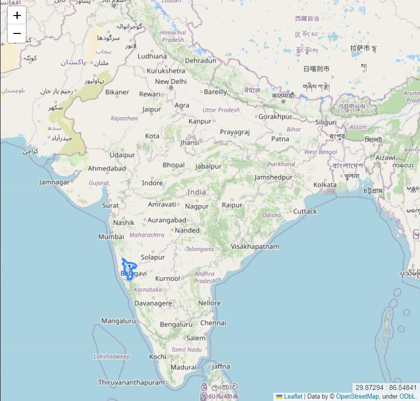

This website serves as a dedicated platform for educational purposes, providing users with a dynamic environment to explore and modify source code according to their specific needs.
Getting Started
Initiate your exploration by locating the conspicuous blue button on the landing page .

Click on it promptly to be seamlessly redirected to the main functional page, depicted as
Here, an interactive map dominates the first half, highlighting regions housing our target refineries of interest. Upon selecting any highlighted area, the map dynamically zooms in, revealing three circles in red, yellow, and green, each indicating blast intensity. Utilize your mouse scroll to effortlessly zoom in or out.
It's important to note that blast effects and coverage are influenced by local weather conditions, although our algorithms currently do not factor in weather. To aid rescue operations, we provide a separate weather map, enabling strategic planning for successful rescue missions.
In the second half, by clicking on "Load Weather," a weather map is seamlessly integrated (generated from publicly available code provided by windy.com; we do not claim ownership of the code or services from windy.com). This succinct walkthrough offers a glimpse into the web app's functionality. For a deeper understanding of the intricate workings, proceed to explore our detailed tech stack.
Tech Stack
1. Python
- Versatility: Given the nature of our mapping solutions, Python emerged as the robust and versatile programming language capable of handling multifaceted tasks simultaneously. Leveraging its inherent strengths and numerous built-in libraries, Python played a pivotal role in the project.
- Folium Library: To enhance map presentations, we harnessed the power of the Folium library, seamlessly integrating with the Leaflet mapping library. Folium's commands facilitated the effective highlighting of areas of interest. For a deeper understanding, refer to the official documentation of the Folium library.
- Geopandas: Another essential Python library in our toolkit, Geopandas, proved instrumental in working with geographic datasets. It empowered us to navigate and manipulate .SHP files of districts containing our targeted refineries.
- Python to HTML: While everything functioned seamlessly in Python, the need to showcase our work on a website prompted the integration of Python scripting. This scripting automatically transformed our Python code into an HTML file, introducing JavaScript into the mix for web-based presentation.
2. Front-end Languages
- JavaScript (JS):
- Python Integration: A significant portion of JS code was seamlessly generated through Python, as highlighted in the earlier points. Minimal customization was applied, focusing on displaying a weather map in one section of the webpage.
- Windy.com Script Integration: We utilized a publicly available script from windy.com to enable the display of the weather map. The integration of this script was achieved through HTML tags, providing transparency and accessibility for users to examine.
- Webpage Functionality: JS was strategically implemented on various pages, including the landing and about pages, ensuring smooth and intended functionality. Additionally, a touch of CSS was applied to enhance the aesthetic appeal of the project.
3. QGIS
- Open-Source GIS Software:
- Purpose: QGIS, an open-source GIS application, played a pivotal role in our project. We utilized it to modify shape files, ensuring the creation of precise and concise regions essential for our mapping solutions. This step was crucial in refining the geographic data to meet our specific requirements.
Data Collection and Processing
1. Deciding the Algorithm for Threat Zone
- A pivotal aspect of our project involved determining the algorithm for defining threat zones. Extensive research led us to the ALOHA technical document (learn more), specifically focusing on the formula outlined in section 6.3.2. This formula became the cornerstone, providing a robust method to calculate the diameter of the threat zone. Furthermore, the formula was extended to classify threats into three levels, each represented by a distinct color.
2. Acquiring Appropriate Shape Files
- The shape files for India were sourced from the official portal of Survey of India. Leveraging the capabilities of QGIS, we meticulously segregated the shape files of the districts relevant to our project. This step was essential in refining geographic data to meet our specific requirements.
3. Storage Data of Refineries
- Our pursuit of comprehensive data led us to the data.gov.in portal, where we accessed statistical information concerning the storage capacity and processing capabilities of the refineries under consideration. This data forms a critical foundation for our project, ensuring accuracy and relevance in our mapping solutions.
Scope of Improvement
1. Global Expansion
- The current website is tailored to display data exclusively about India. Developers have the opportunity to extend its utility globally, encouraging them to adapt the code for their respective countries and regions.
2. Enhanced User Interface and Interactivity
- There's room for substantial improvement in the user interface, with the potential addition of new programming elements to elevate user interaction and overall experience. Developers are encouraged to innovate and enhance the site's visual appeal and usability.
3. Algorithm Refinement for Threat Zone Calculation
- A crucial area for improvement lies in modifying the algorithm for calculating threat zones. Developers are urged to not only focus on accuracy but also consider integrating additional components that can dynamically alter threat zone calculations, ensuring a more nuanced and precise outcome.
4. Dynamic Markers for Rescue Teams
- An essential enhancement involves allowing developers to add customizable markers based on the specific needs of rescue teams. This could include markers for the nearest hospitals, police stations, or other critical locations, facilitating more effective and strategic rescue operations.
5. Open to Suggestions
- Developers are welcomed to contribute their insights and ideas for further improvements. Share your thoughts, suggestions, and innovations to collectively enhance the functionality and impact of this web application.